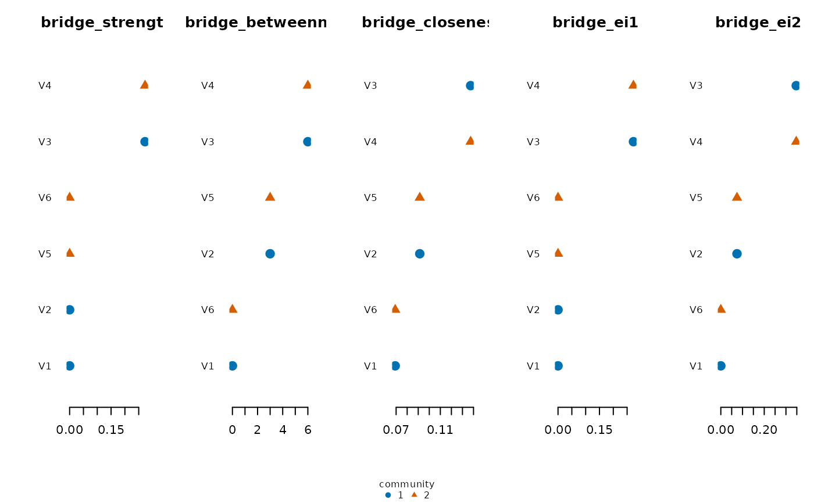

Computes bridge centrality for an undirected weighted network: how strongly each node connects to communities other than its own. You supply the community membership; psychnets does not detect it.
Usage
net_bridge(x, communities, normalize = FALSE, labels = NULL)
# S3 method for class 'psychnet_bridge'
plot(x, measures = NULL, ...)Arguments
- x
A
psychnetobject or a square weighted adjacency matrix. Forplot(), thepsychnet_bridgetable returned bynet_bridge().- communities
Community membership, in one of three forms: an unnamed vector with one entry per node, in node order; a vector named by node label (every node named exactly once); or a list of node-label vectors, one element per community (the element names are the community names), e.g.
list(anxiety = c("A1", "A2"), mood = c("M1", "M2")). Every node must belong to exactly one community: a label listed twice, a label that is not a node, or a node left without a community is an error of classpsychnet_bad_input.- normalize
If
TRUE, rescale each metric asnetworktools::bridge(normalize = TRUE)does: bridge strength and 1-step bridge expected influence are divided by the node's number of other-community nodesq, bridge betweenness by(p - 1) q, and 2-step bridge expected influence byq + (p - 1)(q - q / (p - 1)), wherepis the number of nodes. Bridge closeness is already a mean and is left unchanged. DefaultFALSE.- labels
Optional node labels (used when
xis a bare matrix): one unique label per node.- measures
For
plot(): which bridge columns to draw. Default: all five.- ...
Unused.
Value
A tidy data.frame (class psychnet_bridge), one row per node, with
columns node, community, bridge_strength, bridge_betweenness,
bridge_closeness, bridge_ei1, bridge_ei2. plot() draws one sorted
horizontal panel per bridge measure, each node's point coloured (Okabe-Ito)
and shaped by its community with a community legend, and returns x
invisibly. plot() raises psychnet_bad_input for a measures entry
that is not a bridge column, skips a column with no finite value with a
psychnet_plot_skipped warning, and errors (psychnet_bad_input) when no
requested column has a finite value.
Functions
plot(psychnet_bridge): One sorted panel per bridge measure, points coloured and shaped by community.
References
Jones, P. J., Ma, R., & McNally, R. J. (2021). Bridge centrality. Multivariate Behavioral Research, 56(2), 353-367.
Examples
S <- 0.3^abs(outer(1:6, 1:6, "-"))
fit <- ebic_glasso(cor_matrix = S, n = 400)
br <- net_bridge(fit, communities = c(1, 1, 1, 2, 2, 2))
br
#> node community bridge_strength bridge_betweenness bridge_closeness bridge_ei1
#> 1 V1 1 0.0000000 0 0.06918582 0.0000000
#> 2 V2 1 0.0000000 3 0.09139545 0.0000000
#> 3 V3 1 0.2729255 6 0.13741057 0.2729255
#> 4 V4 2 0.2729255 6 0.13741057 0.2729255
#> 5 V5 2 0.0000000 3 0.09139545 0.0000000
#> 6 V6 2 0.0000000 0 0.06918582 0.0000000
#> bridge_ei2
#> 1 0.00000000
#> 2 0.07448834
#> 3 0.34741385
#> 4 0.34741385
#> 5 0.07448834
#> 6 0.00000000
plot(br)
